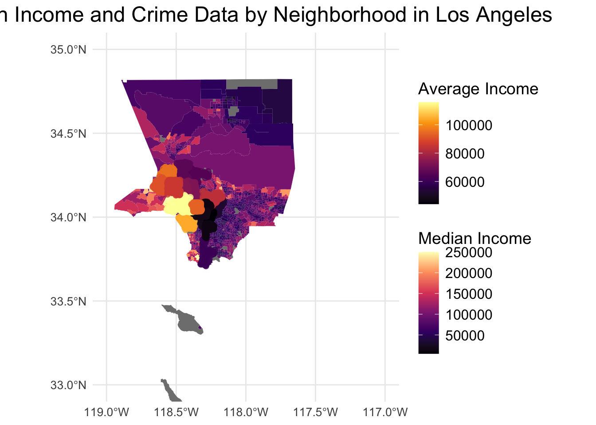
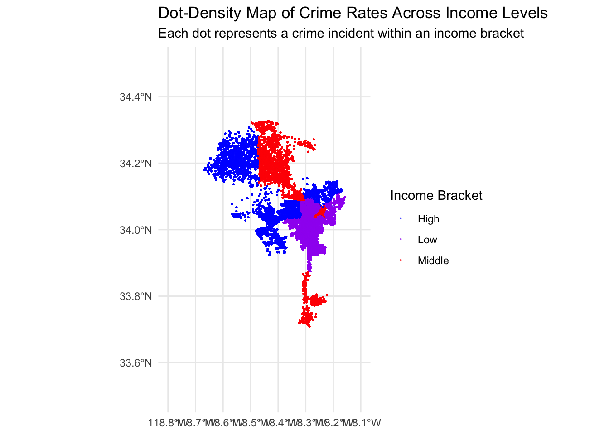
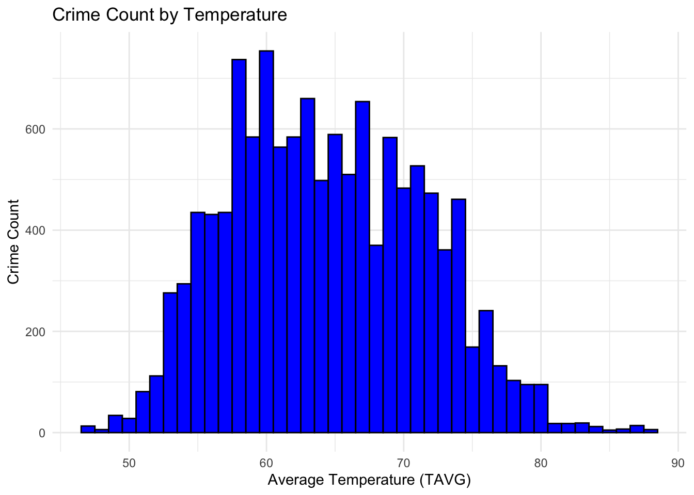

── Attaching core tidyverse packages ──────────────────────── tidyverse 2.0.0 ──
✔ dplyr 1.1.4 ✔ readr 2.1.5
✔ forcats 1.0.0 ✔ stringr 1.5.1
✔ ggplot2 3.5.1 ✔ tibble 3.2.1
✔ lubridate 1.9.3 ✔ tidyr 1.3.1
✔ purrr 1.0.2
── Conflicts ────────────────────────────────────────── tidyverse_conflicts() ──
✖ dplyr::filter() masks stats::filter()
✖ dplyr::lag() masks stats::lag()
ℹ Use the conflicted package (<http://conflicted.r-lib.org/>) to force all conflicts to become errors
Linking to GEOS 3.11.0, GDAL 3.5.3, PROJ 9.1.0; sf_use_s2() is TRUE
here() starts at /Users/seanfung/Documents/BU Fall 2024/MA 415/MA 415 G4 Final Project
Loading required package: viridisLite
Reading layer `8494cd42-db48-4af1-a215-a2c8f61e96a22020328-1-621do0.x5yiu' from data source `/Users/seanfung/Documents/BU Fall 2024/MA 415/MA 415 G4 Final Project/LA_Times_Neighborhood_Boundaries-shp/8494cd42-db48-4af1-a215-a2c8f61e96a22020328-1-621do0.x5yiu.shp'
using driver `ESRI Shapefile'
Simple feature collection with 114 features and 2 fields
Geometry type: MULTIPOLYGON
Dimension: XY
Bounding box: xmin: 6359592 ymin: 1715035 xmax: 6514633 ymax: 1945515
Projected CRS: NAD83 / California zone 5 (ftUS)
Getting data from the 2016-2020 5-year ACS
Downloading feature geometry from the Census website. To cache shapefiles for use in future sessions, set `options(tigris_use_cache = TRUE)`.
# Pull median income data for Los Angelesincome_data <-get_acs(geography ="tract",variables =c(median_income ="B19013_001"),state ="CA",county ="Los Angeles",year =2020,geometry =TRUE)
Getting data from the 2016-2020 5-year ACS
Downloading feature geometry from the Census website. To cache shapefiles for use in future sessions, set `options(tigris_use_cache = TRUE)`.
# Prepare the data for mapping (ensure CRS consistency)income_data <-st_transform(income_data, crs =st_crs(crime_summary))# Join income data with crime data (assuming `crime_summary` has neighborhood geometries)crime_income_map <-st_join(crime_summary, income_data, join = st_within)# Filter out areas with missing income data (if needed)crime_income_map <- crime_income_map %>%filter(!is.na(estimate))# Ensure geometries are valid and filter out empty or invalid geometries# Filter out geometries with coordinates at (0, 0) or zero degrees west (longitude = 0)crime_income_map <- crime_income_map %>%filter(!st_is_empty(geometry)) %>%# Ensure geometry is not emptyfilter(!sapply(geometry, function(geom) { coords <-st_coordinates(geom)return(any(coords[,1] ==0& coords[,2] ==0) ||any(coords[,1] ==0) ||any(coords[,2] ==0)) }))ggplot() +geom_sf(data = income_data, aes(fill = estimate), color =NA) +# Median income layergeom_sf(data = crime_summary, aes(color = avg_income), size =2, alpha =0.7) +# Crime data layerscale_fill_viridis_c(option ="magma", na.value ="grey50") +scale_color_viridis_c(option ="inferno", na.value ="grey50") +labs(title ="Median Income and Crime Data by Neighborhood in Los Angeles",fill ="Median Income",color ="Average Income" ) +theme_minimal() +theme(plot.title =element_text(size =18, hjust =0.5),legend.title =element_text(size =14),legend.text =element_text(size =12),axis.title =element_text(size =12),axis.text =element_text(size =10) ) +coord_sf(xlim =c(-119, -117), # Adjust these values to focus on the Los Angeles areaylim =c(33, 35) # Adjust these values to focus on the Los Angeles area )

crime rates by income levels
Based on the detailed spatial dataset, we’re allowed to do some explorations of the relationship between income levels and crime incidents across Los Angeles neighborhoods. I’m interested in crime rates by income levels. The chunk below is to determine if crime rates are higher in low-income areas. We categorize neighborhoods into income brackets(low, middle, high income) and calculate crime rates for each bracket.
Observing the graph we get above, it seems that neighborhoods with low-income levels have a higher avergae crime rate compared to middle and high-income areas. I think this trend aligns with common sociological patterns. Now we visualize the distribution of crime rates and income levels in Los Angeles. # map of crime rates across income levels
library(ggplot2)library(dplyr)library(sf)crime_income_expanded <- crime_income_map %>%rowwise() %>%mutate(points =list(rep(geometry, total_crimes))) %>%unnest(points) %>%st_as_sf()ggplot() +geom_sf(data = crime_income_expanded, aes(geometry = points, color = income_bracket), size =0.1, alpha =0.6) +scale_color_manual(values =c("blue", "purple", "red"), name ="Income Bracket") +labs(title ="Dot-Density Map of Crime Rates Across Income Levels",subtitle ="Each dot represents a crime incident within an income bracket" ) +theme_minimal() +coord_sf(xlim =c(-118.8, -118.1), ylim =c(33.5, 34.5))

There’s a dense cluster of red/ purple/ blue dots in certain areas, showing that neighborhoods classified under high/ middle/ low income have noticeable crime incidents concentrated within specific locations. the visual representation shows that crime rates are not uniformly distributed across all income levels. # Input LA Temp CSV and change it to RDS file
ggplot(data_with_temp, aes(x = TAVG)) +geom_histogram(binwidth =1, fill ="blue", color ="black") +labs(title ="Crime Count by Temperature",x ="Average Temperature (TAVG)",y ="Crime Count") +theme_minimal()
Warning: Removed 29 rows containing non-finite outside the scale range
(`stat_bin()`).

The histogram shows that crime counts are higher in the temperature range of approximately 55°F to 75°F. Within this range, the frequency of crimes appears to be fairly consistent, with a peak around 60°F to 70°F. As temperatures exceed 75°F, there is a noticeable decline in crime counts. This suggests that extremely warm days may be associated with lower crime activity. Similarly, at lower temperatures (below 50°F), there are also fewer crime incidents. This could be due to people staying indoors more on colder days, leading to less social interaction and possibly fewer opportunities for crime.